[9-6] FlyMcu串口下载与STLINK Utility — 学习笔记
- 课程：江协科技《STM32入门教程-2023版 细致讲解 中文字幕》
- 视频：BV1th411z7sn?p=30，21:59（1319 秒）
- 素材：220 帧关键帧（每 6 秒，宽 1280px）+ PP-OCRv4 画面硬字幕 OCR（388 段）；关键截图 15 张随笔记收录（源图在
vidsum_out/stm32_p30/frames/，站内图片在assets/images/stm32-30/） - 字幕情况：该集 B 站没有 CC/AI 字幕，文本由画面烧录的中文字幕 OCR 得到（source=subtitle-ocr）；字幕里混入了软件界面文字/日志（如
FromELF: creating hex file...、Flash Load finished、www.mcuisp.com、Application running ...）与行首符号，这些不是老师口述内容，已剔除，错字已按画面校正（清单见文末「存疑」）。 - 本集定位：这是工具实操课——教两个上位机软件：FlyMcu（串口 ISP 下载） 与 STLINK Utility（SWD 下载）。全程没有写一行新代码（只借用现成的
3-1 LED闪烁示例工程生成 hex 文件），也没有讲 Keil 内置下载的配置（那部分在软件安装集）；中途插 PPT 讲存储器映像/启动配置，并打开 CH340G 模块原理图讲一键下载电路。片尾 21:50「有关这两个软件、STM32 BootLoader、选项字节等内容到这里就结束了」，没有下集预告（工具篇收尾，模块 9 结束）。
一句话结论
FlyMcu 是通过串口给 STM32 下载程序的绿色免安装软件（作用是 51 单片机 STC-ISP 那一套；没买 ST-Link 时用它），STLINK Utility 是配合 ST-Link 用 SWD 下载的工具——两者功能差不多，区别只是下载通道。串口下载有三个前提：① 电路必须能实现 USART1 与电脑通信（本芯片的串口下载只适配 USART1，接 USART2/3 不行）② 要一个 .hex 文件——Keil 里 工程选项 → Output → 勾 Create HEX File，重新编译后 Build Output 会多出 FromELF: creating hex file...，在 Objects 目录里得到 Project.hex ③ 下载前必须让芯片进 BootLoader：把 BOOT0 跳线帽从左边拔下插到右边两个针脚（BOOT0=1），再按一次复位（STM32 只在复位时读 BOOT 引脚，运行中切换无效）。FlyMcu 里：搜索串口 → Port 选 COM 号 → bps 保持 115200 → 点「…」选 hex → 其余默认 → 开始编程；日志会显示 CPU ID 0x414、芯片内 BootLoader 版本 3.0、写选项字节、命令执行完毕一切正常；此时 LED 还不亮（芯片在跑 BootLoader），把 BOOT0 跳线帽换回、按复位，LED 闪烁。原理：0x08000000 存的是主程序，串口下载要有一段「能接收数据并写进 Flash」的程序——它就是 BootLoader，由 ST 出厂烧在 ROM 末尾 0x1FFFF000 系统存储器（比喻：机器人给自己换电池，得先有另一个小机器人；类比手机刷机模式、电脑 PE 系统）；由 BOOT 引脚选择启动哪个程序（表6：BOOT1=x/BOOT0=0 → 主闪存；BOOT1=0/BOOT0=1 → 系统存储器；BOOT1=1/BOOT0=1 → 内置 SRAM），且复位后 SYSCLK 第 4 个上升沿锁存 BOOT 引脚值。嫌每次拔跳线帽麻烦 → 可用串口模块的 RTS、DTR 输出脚（配两个三极管）做一键下载电路，用软件自动控制 BOOT0/RST（本套板没有这个电路，只能手动；FlyMcu 下方下拉框就是配 DTR/RTS 电平用的，没电路时选哪个都行）。FlyMcu 其它功能：读 Flash（只能存 .bin，无地址信息；hex 才有地址信息；FlyMcu 下载只认 hex、读出来只能 bin，bin 不能再下回去）、清除芯片（全擦成 FF）、读器件信息（序列号 + Flash 容量，作者实测本片 256KB，而 C8T6 标称 64KB——属实测+网上说法）、选项字节（四大块：读保护 A5 允许读出/FF 阻止读出、硬件选项字节、用户数据字节 Data0/Data1、写保护 WRP0～WRP3 按 2KB 页）。选项字节的坑：设了写保护再下载会出错，而 FlyMcu 不能单独写选项字节、只能下载时顺带写 → 下载不了就解不了保护，形成死循环；STLINK Utility 能单独改选项字节，所以能解。STLINK Utility：安装（含 ST-Link 驱动）→ 跳线帽全部回最左边 + 复位 → 点连接（Device ID 0x414、Flash 256KB）→ 保存/擦除/打开文件（hex 和 bin 都支持）/编程 → Start → LED 闪烁；选项字节走 Target → Option Bytes，配好点 Apply 就能单独修改；还能 ST-LINK → Firmware update 升级固件（当前 V2.J29.S7，可升 V2.J37.S7，用着没问题不必常更新）。
0. 本集定位：工具实操课（无代码）
- 本集不写代码：只借用现成的
3-1 LED闪烁示例工程，唯一改动是「勾上生成 HEX 文件」这个选项，用来演示下载流程。 - 本集不是「代码课」也不是「理论课」：主体是两个上位机软件的操作演示（FlyMcu、STLINK Utility），中间夹了 PPT（存储器映像、启动配置表6）和 CH340G 原理图（一键下载电路）。
- 本集不讲：Keil 内置下载（ST-Link Debugger / Flash Download 配置在软件安装集里）、DAP-Link 等其他下载器。
- 片尾 21:50 收尾，无下集预告；模块 9（USART）到此结束。
1. 两个软件是什么
资料文件夹「工具软件」里有：FlyMcu 程序烧录软件、STLINK Utility、UltraCodingSwitch、USB 转串口 CH340 驱动、串口助手——本集讲前两个。
| 软件 | 下载通道 | 特点 |
|---|---|---|
| FlyMcu | 串口（USART1） | 绿色软件免安装，打开即用；没有 ST-Link 时的方案；作用类似 51 的 STC-ISP |
| STLINK Utility | ST-Link（SWD） | 需要安装（含 ST-Link 驱动）；配合 ST-Link 使用，功能更全（可单独配置选项字节、升级固件） |
- 两者功能差不多，都能下载程序，区别只是下载通道不同：FlyMcu 是串口下载，STLINK Utility 是 ST-Link 下载；
- 串口下载的硬件要求：电路要能保证 USART1 与电脑进行串口通信（接法与前几节一样：模块 RXD→PA9、TXD→PA10、GND 共地）；必须是 USART1，接其他 USART 不行。
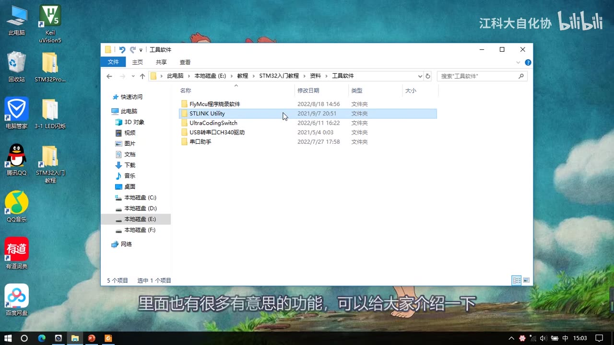
图 1：资料里的「工具软件」文件夹——FlyMcu程序烧录软件、STLINK Utility、UltraCodingSwitch、USB转串口CH340驱动、串口助手；字幕「里面也有很多有意思的功能，可以给大家介绍一下」
2. FlyMcu 串口 ISP 下载流程
2.1 生成 HEX 文件（Keil 侧唯一改动）
- 随便打开一个示例工程（这里拖进来的是
3-1 LED闪烁）； - 点工程选项 → Output 选项卡 → 勾上「Create HEX File」→ OK；
- 重新编译：Build Output 里会多出一条
FromELF: creating hex file...； - 打开工程目录，在
Objects文件夹里就能找到Project.hex（示例中 5 KB）——这就是串口下载需要的程序文件，「这部分流程和 51 单片机那里是一样的」。
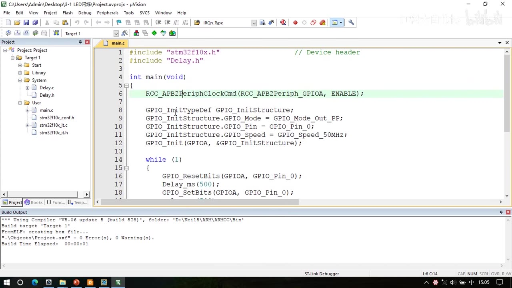
图 2：Keil 打开示例工程 3-1 LED闪烁（main.c 里 GPIOA Pin_0 推挽输出、GPIO_ResetBits / Delay_ms(500) / GPIO_SetBits 循环），Build Output 出现 FromELF: creating hex file... 与 0 Error(s), 0 Warning(s)
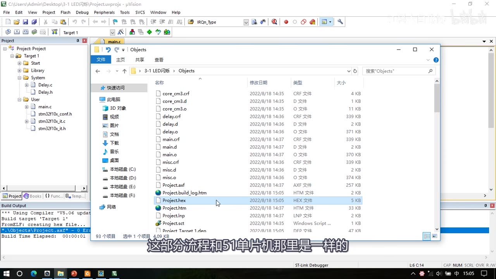
*图 3：工程目录 Objects 文件夹里的 Project.hex（HEX 文件，5 KB，修改时间 2022/8/18 15:05，高亮）；字幕「这部分流程和51单片机那里是一样的」*
2.2 FlyMcu 界面设置
打开 FlyMcu V0.188（标题栏可见版本号），按下面顺序设置：
- 点 「搜索串口」（菜单栏里的搜索按钮）；
- Port 选 COM 号（这里 COM12）；
- bps 保持默认 115200（这是串口下载的波特率，与前面串口助手一样）；
- 点右边的 「…」 按钮，找到刚才生成的 hex 文件（工程目录
Objects里选中、打开）； - 其余配置先保持默认。
界面上还有：「编程前重装文件」（勾选后每次都重新加载 hex）、「校验」、「编程后执行」、「使用 RamIsp」、「连续烧录模式」、读器件信息(R) / 清除芯片(Z) / 读FLASH 按钮、选项字节区（「编程到FLASH时写选项字节」「设定选项字节等」），以及底部下拉框（配 DTR/RTS 电平，配合一键下载电路用）。
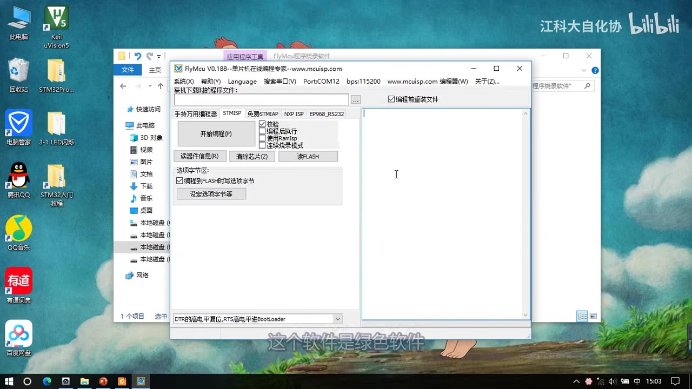
图 4：FlyMcu V0.188 主界面——菜单栏 搜索串口(V) / Port:COM12 / bps:115200 / www.mcuisp.com，「联机下载时的程序文件」栏、「编程前重装文件」勾选；左侧「开始编程(P)」与校验/编程后执行/使用RamIsp/连续烧录模式；「读器件信息(R)/清除芯片(Z)/读FLASH」；选项字节区「编程到FLASH时写选项字节」「设定选项字节等」；底部下拉框「DTR的高电平复位,RTS高电平进BootLoader」；字幕「这个软件是绿色软件」
2.3 进 BootLoader：拔 BOOT0 跳线帽 + 按复位
- 配置 BOOT 引脚之前，直接点「开始编程」会一直卡住——因为芯片还在跑主程序，没人接收串口数据；
- 第一步：找到板上的两个跳线帽（配置 BOOT 引脚用），把 BOOT0 的跳线帽拔下来；
- 第二步：插在右边两个针脚上——即 BOOT0 = 1；
- 第三步（关键）：按一下复位键——STM32 只有在刚复位时才会读取 BOOT 引脚的值；程序运行后再切换 BOOT 引脚是无效的；
- 这样芯片就进入了 BootLoader 程序：不断接收 USART1 的数据、刷新到主闪存。
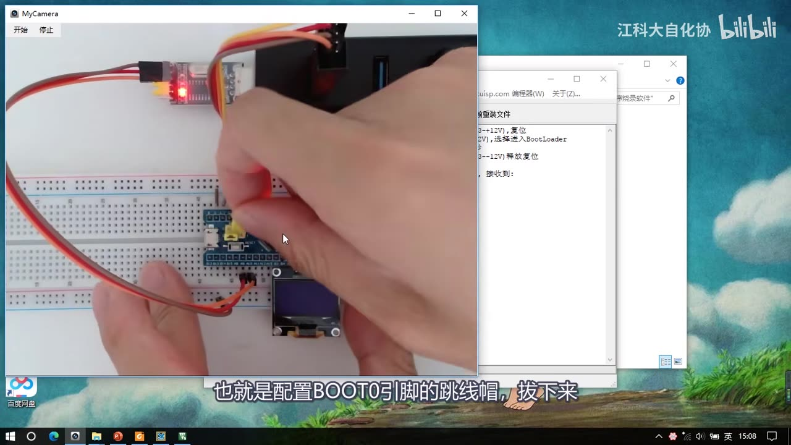
*图 5：面包板实拍——手上正把 BOOT0 跳线帽从原位置拔下来（准备插到右边针脚，BOOT0=1）；右侧是 FlyMcu 窗口；字幕「也就是配置BOOT0引脚的跳线帽，拔下来」*
2.4 下载与现象
- 回到 FlyMcu 点「开始编程」 → 下载过程成功运行；
- 日志（示例）：DTR/RTS 电平操作 → 开始连接 → 收到
1F 1F→ 串口 COM12 连接成功 115200bps → 芯片内 BootLoader 版本号 3.0 → 芯片 PID 0x00000414（STM32F10xxx High-density）→ 读出的选项字节 A5 5A FF 00 FF 00 FF 00 FF 00 FF 00 FF 00 → 96 位芯片唯一序列号 → 芯片 FLASH 容量为 256KB → 开始全片擦除 → 全片擦除成功 → 写入 1KB 进度 100% → 写入选项字节 → 成功写入选项字节 → 命令执行完毕，一切正常； - 此时 LED 还不亮——因为 STM32 还在执行 BootLoader 的刷机程序；
- 把 BOOT0 跳线帽换回（回左边）+ 按一下复位 → LED 闪烁，程序正常运行。
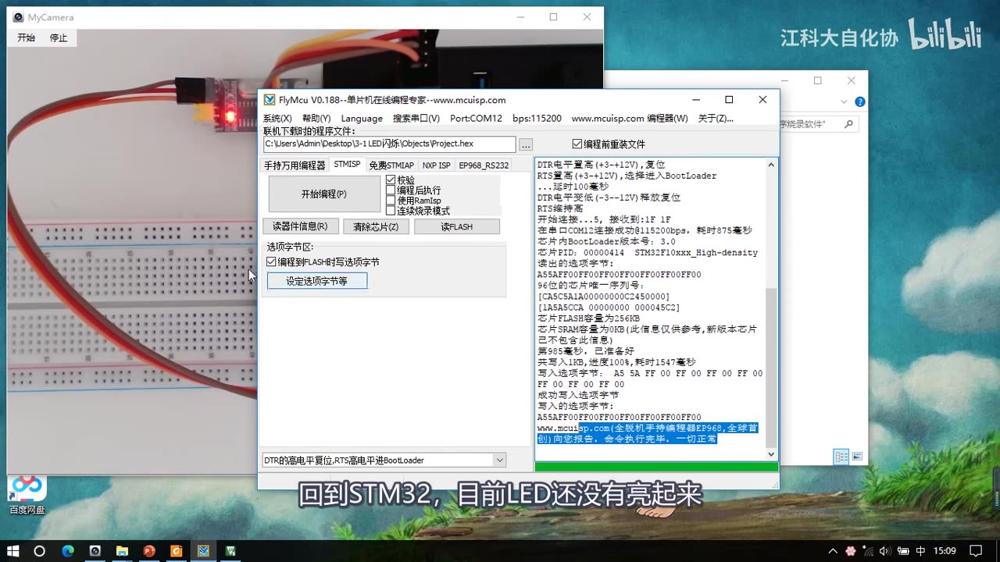
图 6：FlyMcu 下载完成后的日志窗口——DTR/RTS 时序、开始连接、收到 1F 1F、串口 COM12 连接成功 115200bps、芯片内 BootLoader 版本号 3.0、芯片 PID 0x00000414、读出选项字节 A5 5A FF 00 …、96 位唯一序列号、芯片 FLASH 容量 256KB、全片擦除成功、写入 1KB 进度 100%、成功写入选项字节、命令执行完毕一切正常；字幕「回到STM32，目前LED还没有亮起来」
3. 原理：BootLoader 与启动配置
3.1 BootLoader 是「给自己换电池的小机器人」
- 之前讲过 STM32 的存储器映像：ROM 区
0x08000000位置存的就是编译后的程序代码，写什么程序进去、STM32 就执行什么程序； - 串口下载的本质：把程序数据通过串口发给 STM32，由它接收并刷新到
0x0800这一块位置； - 但「接收并转存数据」这个动作本身也是一个程序——如何用程序实现自我更新？ 作者用机器人给自己换电池打比方：换电池要先拆旧电池、再装新电池，可旧电池一拆机器人就没电了，装新电池的工作也做不了；所以必须再额外做一个小机器人，需要时启动它、由它完成换电池、再回去运行大机器人；
- 同理：STM32 串口自我更新就需要「小机器人」——这就是 BootLoader：ST 公司写好的一段程序，存放在 ROM 区最后、
0x1FFFF000处的「系统存储器」里（也叫自举程序），用途就是程序自我更新（串口下载）：- 更新时：BootLoader 接收 USART1 的数据、刷新到程序存储器；这期间主程序处于瘫痪状态；
- 更新完成后：再启动主程序、执行新程序——这就是串口下载的完整流程；
- 类比：BootLoader 相当于手机的刷机模式或电脑的 PE 系统，是辅助主程序进行自我更新的。
3.2 启动配置表6：BOOT1/BOOT0 决定启动哪个程序
PPT 里的表6 启动模式：
| BOOT1 | BOOT0 | 启动模式 | 说明 |
|---|---|---|---|
| X | 0 | 主闪存存储器 | 从 0x08000000 启动（跑「大机器人」＝你的程序） |
| 0 | 1 | 系统存储器 | 从 0x1FFFF000 启动（跑「小机器人」＝BootLoader） |
| 1 | 1 | 内置 SRAM | 从 0x20000000 启动（比较高级，暂时不用） |
- 所以串口下载时把 BOOT0 置 1（BOOT1=0） → 芯片从系统存储器启动 → 跑 BootLoader → 才能接收串口数据写 Flash；
- 下载完把 BOOT0 换回 0 → 复位后从主闪存启动 → 跑你刚下载的程序；
- PPT 下方还写着：「在系统复位后，SYSCLK 的第 4 个上升沿，BOOT 引脚的值将被锁存」——所以每次切换 BOOT 引脚之后，都必须按一下复位。
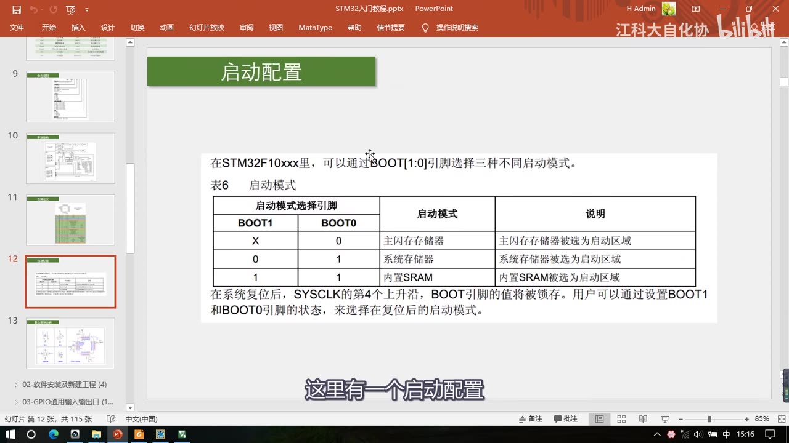
图 7：PPT「启动配置」——表6 启动模式：BOOT1=X/BOOT0=0 → 主闪存存储器；BOOT1=0/BOOT0=1 → 系统存储器；BOOT1=1/BOOT0=1 → 内置SRAM；下方说明「在系统复位后，SYSCLK 的第4个上升沿，BOOT引脚的值将被锁存。用户可以通过设置BOOT1和BOOT0引脚的状态，来选择在复位后的启动模式」；字幕「这里有一个启动配置」
4. 一键下载电路（原理，本套板没有）
- 痛点：每下载一次程序就要拔插两遍跳线帽 + 按两次复位，太麻烦；
- 思路：程序自我更新必须让 BOOT0 和 RST 引脚产生高低电平变化；那能不能接两根线，让电脑点下载时自动设置这两个引脚的电平？——可行；
- 用什么线：看串口模块电路——除了 TXD/RXD 通信脚，CH340G 还有 RTS、CTS、DTR、DSR 这几个流控脚，其中 RTS 和 DTR 是输出脚，可以用它们控制 BOOT0 和 RST；
- 外围电路：一般用两个三极管开关做控制电路；电路细节可上网搜 「STM32 一键下载电路」，有方案和解释；
- 有了这个电路：点下载时软件自动完成「进 BootLoader → 下载 → 回主程序」，不需要再频繁切换跳线帽、按复位；
- FlyMcu 底部的下拉框就是配置 DTR/RTS 电平的（「DTR 的高电平复位 / RTS 高电平进 BootLoader」等）——要根据你的一键下载电路来选；
- 注意（本套板）：我们这个硬件没有一键下载电路，所以还是得手动切换跳线帽，下拉框选哪个都无所谓（下载前软件仍会按设置给 DTR/RTS 置电平，但对本板没有物理作用）。
4.1 缓招：勾「编程后执行」+ 去掉「写选项字节」
- 没有一键下载电路，还有一个缓招：勾上「编程后执行」，同时去掉「编程到FLASH时写选项字节」的勾——否则下载之后会提示执行失败；
- 这样下载完成后，软件会人工加一条跳转指令，让芯片直接从
0x0800开始运行主程序——即使跳线帽还停在 BootLoader 状态，LED 也会立刻开始闪； - 但这是一次性的：按一下复位，程序又回到 BootLoader（LED 不亮）；
- 用法：调试阶段把跳线帽切到 BootLoader、反复下载调试，全部调试完成后再切回主程序——只在最开始和最后切换一次跳线帽，比较省事。
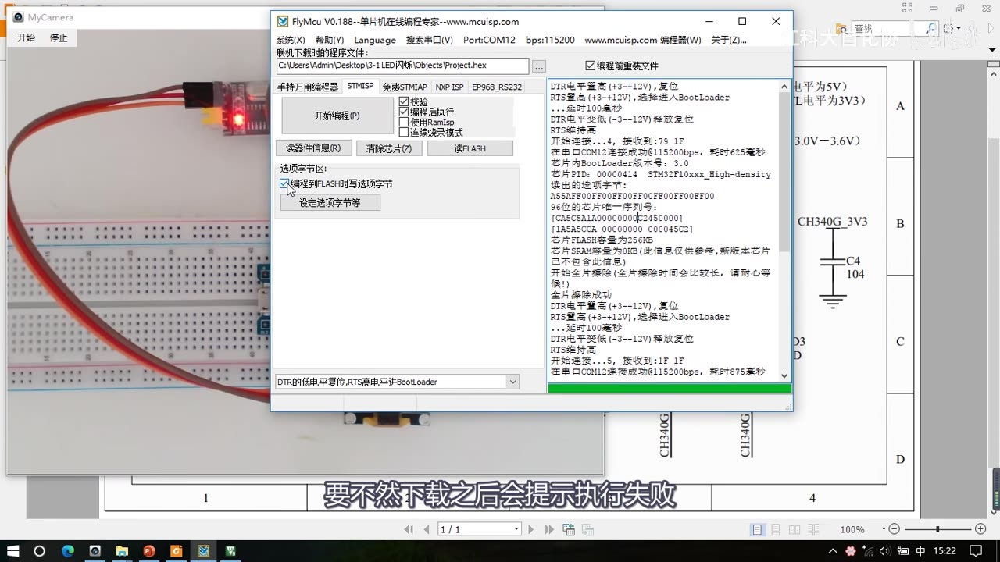
图 8：FlyMcu 勾选「编程后执行」、**「编程到FLASH时写选项字节」未勾选*，底部下拉框为「DTR的低电平复位,RTS高电平进BootLoader」；右侧日志显示开始连接、芯片 BootLoader 版本 3.0、FLASH 容量 256KB、全片擦除成功等；字幕「要不然下载之后会提示执行失败」*
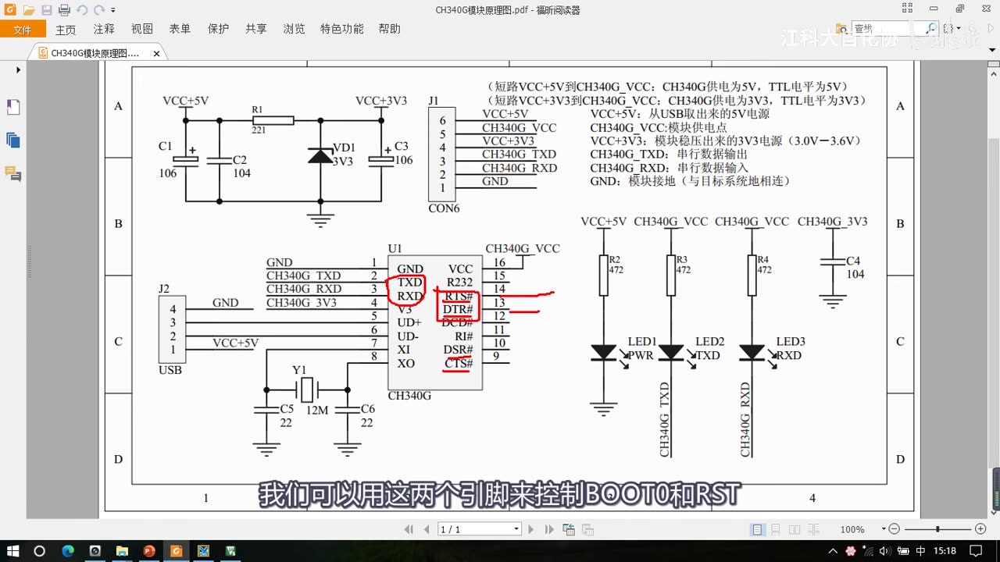
*图 9：CH340G 模块原理图——U1 CH340G 的 14 脚 RTS#、13 脚 DTR#（红圈/红线标出）可用于控制 BOOT0 与 RST；右侧是排针与引脚说明（5V/VCC/3V3/TXD/RXD/GND）；字幕「我们可以用这两个引脚来控制BOOT0和RST」*
5. FlyMcu 的其它功能
5.1 读 Flash → .bin
- 点 「读FLASH」 → 选保存位置（桌面）、起名
led→ 保存 → 提示读取完成，桌面出现程序文件； - 能做啥：比如别人用 STM32 做了个产品，你抄了 PCB 板、再把芯片里的程序读出来，就能「大批量山寨」——所以自己做产品时要注意开读保护（见第 6 章）；
.bin与.hex的区别：bin 是「没有地址信息的原始数据文件」（记录的是从0x0800开始的程序数据）；hex 是带地址信息的；- FlyMcu 的局限：下载时只能选
.hex文件（选 bin 会报错）；读出来只能存.bin——读出的 bin 不能再下载回去（软件设计时没考虑到）；STLINK Utility 两种都支持。
图 10：读完 Flash 后，桌面出现 led.bin（高亮）；字幕「桌面上就出现了程序文件」
5.2 清除芯片与读器件信息
- 「清除芯片」：把主程序区全部擦除，擦除后所有数据都是 FF；
- 「读器件信息」：读出芯片序列号等信息，以及 Flash 容量；
- ⚠ 实测现象：作者这片 C8T6 读出 Flash 容量 256KB，而 C8T6 标称 64KB（中容量产品），「直接成大容量产品了」——作者试过很多片：有的 64K、有的 128K、有的 256K；百度到的说法是生产时为了省工序，很多型号一个模子做出来，但 C8T6 只保证前 64K 没问题（也有其他说法）——这不是官方结论，属实测 + 网上传闻，不过「问题并不是很大」；
- 面板上的 Ramlsp、连续烧录模式目前用得不多，可自行研究。
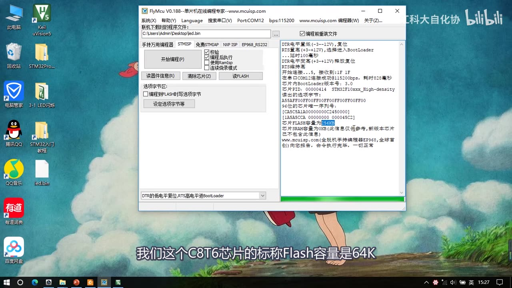
*图 11：FlyMcu 日志里红框标出 「芯片FLASH容量为256KB」；字幕「我们这个C8T6芯片的标称Flash容量是64K」*
6. 选项字节（Option Bytes）
选项字节也是 ROM 区最后的一小块存储单元，用途是存储一些独立于程序代码的配置参数。点「设定选项字节等」→ 选 STM32F1 那一项，就打开配置窗口；共四大块。
6.1 读保护
A5= 允许读出；FF= 阻止读出（窗口里就是「改成A5允许读出」「改成FF阻止读出」两个按钮，并说明「RDP 值等于 0xA5 时允许读出 Flash 内容，其它值阻止读出并阻止对 Flash 前 4KB 的读写」）；- 作用：做产品时不开读保护，别人很容易把程序偷走（如 5.1 的读 Flash）；
- 注意：阻止读出之后再回 Keil 下载程序会失败；要到这里取消读保护（改回 A5）；
- 重要副作用：取消读保护时会同时清空芯片里的程序——「这样程序就不会被偷走了」。
6.2 硬件选项字节
- 包括软件看门狗（WWDG）硬件/软件启动、进入 STOP 模式不产生复位、进入 Standby 模式不产生复位，以及 B3～B7「这几位用户应该大概也许可以使用」；
- 了解一下就行，有需求再用。
6.3 用户数据字节
Data0（地址0x1FFFF804）、Data1（地址0x1FFFF806）：这两个字节用户可以自由使用。
6.4 写保护
WRP0～WRP3可以对 Flash 的页单独写保护（按 0-3、4-7、8-11 … 分组勾选，每 2KB 一页）；- 用途举例：在主程序最后几页写了自定义数据、不想下载时被擦掉，就可以把最后几页设成写保护锁起来；
- 设了写保护就不能再写，要写必须先解除写保护。
6.5 选项字节的好处
- 不随程序更新变化（「世外桃源」）——可以用来存不随程序变化而变化的参数；
- 可以用上位机（FlyMcu / STLINK Utility）很方便地修改——可以做成产品中供用户配置的参数。
6.6 ⚠ 写保护的坑：FlyMcu 的死循环
- 设了写保护之后再下载，如果需要写入保护区就会出错（比如把最前面几页设了写保护，下载一次之后再下载肯定出错）；
- 而 FlyMcu 这个软件不能单独写选项字节，只能下载 Flash 时顺便写选项字节；
- 于是：写保护了 → 下载不了 → 下载不了就不能解除写保护 → 死循环；
- 解决：用 STLINK Utility——它可以单独配置选项字节（第 7 章），所以能解开；
- 配置完选项字节记得点「采用这个设置」，并把**「编程到FLASH时写选项字节」勾上**，再走正常下载流程，就能更新选项字节的配置。
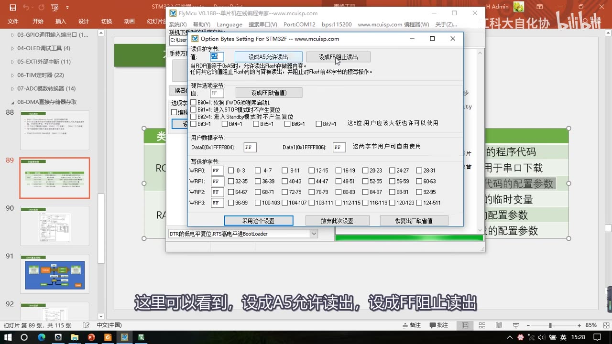
图 12：FlyMcu 的「Option Bytes Setting」窗口——读保护字节（值栏 +「改成A5允许读出」「改成FF阻止读出」按钮及说明）、硬件选项字节（值 FF、「设置成FF(缺省值)」按钮，B0=1 软狗硬件启动、B1=1 进 STOP 不产生复位、B2=1 进 Standby 不产生复位、B3～B7）、用户数据字节 Data0(0x1FFFF804)/Data1(0x1FFFF806)、写保护字节 WRP0～WRP3（0-3、4-7 … 复选框），以及「采用这个设置 / 放弃此次设置 / 恢复出厂缺省值」按钮；字幕「这里可以看到，设成A5允许读出，设成FF阻止读出」
7. STLINK Utility（SWD 下载）
7.1 安装
- 是安装包：下一步 → Yes → 指定安装路径（默认也行）→ 下一步；
- 最后一步提示安装 ST-Link 驱动（勾上）→ Finish；
- 安装完桌面出现软件图标，双击打开就是主界面。
7.2 下载流程
- 跳线帽恢复（两个都回到最左边，即 BOOT0=0）+ 按复位；
- 点工具栏的连接按钮 → 右侧出现器件信息：Device（STM32F10xx High-density）、Device ID 0x414、Revision ID、Flash size 256KBytes；
- 下方大框显示的是
0x08000000开始的程序数据——作者这里芯片刚被擦除过，所以数据全是 FF； - 保存：可以把这块数据存成
.hex或.bin； - 断开连接、橡皮擦（擦除芯片）；
- 打开文件：文件类型支持
.hex和.bin——所以可以打开刚才用 FlyMcu 读出的 bin（解决 5.1 的局限）； - 点编程按钮（下方一栏显示程序文件路径），再点 Start 开始下载 → 下载完成，LED 闪烁；
- 这一套流程和 Keil 内置下载基本一样，非常简单。
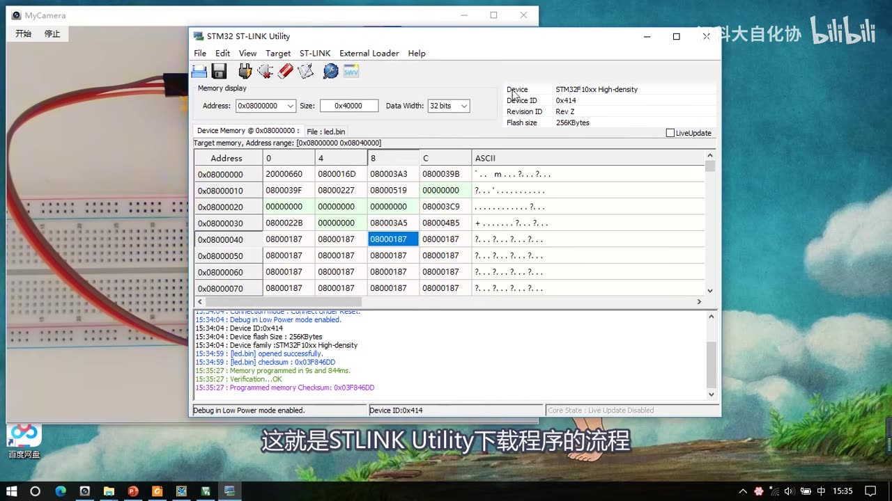
图 13：ST-LINK Utility 主界面——Device 为 STM32F10xx High-density、Device ID 0x414、Revision ID Rev Z、Flash size 256KBytes；Memory display 的 Address 0x08000000、Size 0x40000、Data Width 32 bits；Device Memory @0x08000000，File 为 led.bin；下方日志 Device ID:0x414、Device Flash Size 256KBytes、led.bin opened successfully、Memory programmed in 9s and 844ms.、Verification...OK、Programmed memory Checksum 0x03F846DD；字幕「这就是STLINK Utility下载程序的流程」
7.3 选项字节：Target → Option Bytes（可单独修改）
- 菜单 Target → Option Bytes 打开配置页，内容和 FlyMcu 里的一样：
Read Out Protection（下拉可选 Disabled 等）、BOR Level；- User configuration option bytes（IWDT_STOP/IWDT_SW、WWDG_SW、nBOOT0、nBOOT1、nRST_STOP、nRST_STDBY、nRST_SHDW、VDDA_Monitor 等）；
- Security option bytes（SEC_SIZE0/SEC_SIZE2、BOOT_LOCK）；
- Boot address option bytes（BOOT_ADD0/BOOT_ADD1）；
- User data storage option bytes（Data 0 / Data 1，默认 0xFF）；
- Flash sectors protection（Page 0、1、2 … 每页 Start address / Size 2K / Protection：No Protection）；
- 该型号没有的项会显示成灰色（如 BOR Level 的下拉显示 Unavailable）；
- 配好之后直接点 Apply，就能单独更改选项字节——不像 FlyMcu 必须下载程序顺便更新；
- 所以如果芯片被读保护或写保护锁住了，可以到这里解除保护（解决 6.6 的死循环）。
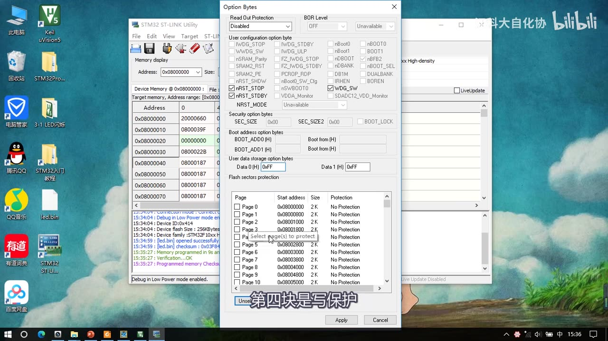
图 14：STLINK Utility 的 Option Bytes 窗口——Read Out Protection: Disabled、BOR Level（Unavailable 灰）、User configuration option bytes（IWDT_STOP/IWDT_SW/nBOOT0/WWDG_SW/nRST_STOP/nRST_STDBY/nRST_SHDW 等复选框）、Security option bytes（SEC_SIZE0/SEC_SIZE2、BOOT_LOCK）、Boot address option bytes、User data storage option bytes（Data 0/1 = 0xFF）、Flash sectors protection（Page 0～10，Start address 0x08000000，Size 2K，Protection No Protection）；下方 Apply / Cancel；字幕「第四块是写保护」
7.4 固件升级：ST-LINK → Firmware update
- 菜单 ST-LINK → Firmware update → 打开 ST-LinkUpgrade 窗口 → 点 Device Connect（这里提示要重启一下——按提示拔掉重新插）→ 连接成功；
- 显示当前固件版本
V2.J29.S7，最新可升级到V2.J37.S7（Type：STM32+STM8 Debugger）； - 要升级点 Yes >>>> 即可；用着没问题的话，也不需要经常更新。
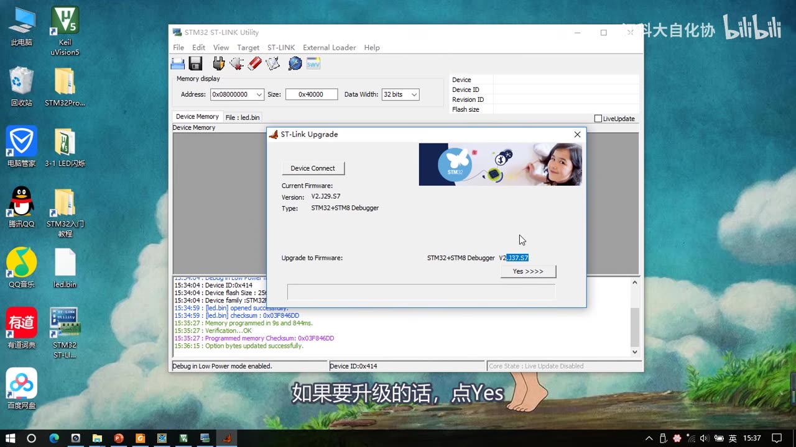
图 15：ST-Link Upgrade 窗口——Current Firmware: Version: V2.J29.S7 / Type: STM32+STM8 Debugger；Upgrade to Firmware: STM32+STM8 Debugger V2.J37.S7；Yes >>>> 按钮；后面 ST-LINK Utility 日志可见 Option bytes updated successfully.；字幕「如果要升级的话，点Yes」
8. 两者对比与适用场景
| 对比项 | FlyMcu | STLINK Utility |
|---|---|---|
| 下载通道 | 串口 USART1（ISP） | ST-Link SWD |
| 是否需要额外硬件 | 只要 USB 转串口模块（有板载 CH340 即可） | 必须有 ST-Link 调试器 |
| 安装 | 绿色免安装 | 需安装（含驱动） |
| 下载文件 | 只能 .hex |
.hex 和 .bin 都支持 |
| 读取文件 | 只能存 .bin（不能再下回去） |
hex/bin 均可 |
| 进下载模式 | 手动切 BOOT0 + 复位（或一键下载电路） | 不需要（SWD 直接连） |
| 选项字节 | 只能下载时顺带写（写保护后死循环） | 可以单独改（Apply），能解保护 |
| 速度/便利性 | 慢（115200 串口）、步骤多 | 快、和 Keil 内置下载一样简单 |
| 典型场景 | 没有 ST-Link 时救急、量产简单下载 | 日常开发下载/调试、救砖解保护 |
- 一句话：日常开发用 ST-Link（STLINK Utility 或 Keil 内置）；手头没有 ST-Link 时，FlyMcu 用串口也能下载——前提是芯片没被写保护锁死。
坑与易错点
- 串口下载只认 USART1：接 USART2/3 不行。
- 必须先生成 hex：Keil 工程选项 → Output → 勾 Create HEX File，否则 Objects 里没有
Project.hex；编译成功会打印FromELF: creating hex file...。 - 下载前必须进 BootLoader：BOOT0=1 + 按复位；不按复位的话芯片仍在跑主程序，点「开始编程」会一直卡住。
- STM32 只在复位时读 BOOT 引脚（复位后 SYSCLK 第 4 个上升沿锁存）：改了跳线帽不按复位等于没改。
- 下载完 LED 不亮是正常的：芯片还在跑 BootLoader；BOOT0 换回 + 复位才运行主程序。
- FlyMcu 下载只能选
.hex，读出来只能存.bin，bin 不能再下回去——想下 bin 用 STLINK Utility。 - 读保护设成 FF 后 Keil 就下载失败：要回选项字节改回 A5；取消读保护会同时清空程序。
- 写保护 + FlyMcu = 死循环：写保护后下载出错、FlyMcu 又不能单独写选项字节；用 STLINK Utility 的 Option Bytes 解除。
- 「编程后执行」是一次性的：勾它并去掉「写选项字节」勾可让下载后立刻运行，但按复位又会回到 BootLoader。
- 本套板没有一键下载电路：FlyMcu 的 DTR/RTS 下拉框选了也没实际作用，还是要手动拔跳线帽。
- Flash 显示 256K ≠ 官方 64K：C8T6 标称 64K，读出值因片而异（64/128/256K），C8T6 只保证前 64K——实测+网上说法，不是官方结论。
- STLINK Utility 的选项字节改完必须点 Apply，否则不生效；该型号没有的项显示灰色（Unavailable）属正常。
- ST-Link 固件升级前：ST-LinkUpgrade 会提示重启——按提示拔插一次再连；用着没问题不必常更新。
- 擦除后数据全是 FF：这是正常的空片状态（
0x08000000起全 FF 就是已擦除）。
时间轴
| 时间 | 内容 |
|---|---|
| 0:02 | 这一小节讲点轻松的，教大家用两个小软件 |
| 0:12 | 第一个是 FlyMcu，可以通过串口给 STM32 下载程序 |
| 0:19 | 没有 ST-Link 时可以用这个软件串口下载 |
| 0:24 | 第二个是 STLINK Utility，配合 ST-Link 使用 |
| 0:36 | 两个软件功能差不多，都能下载程序 |
| 0:40 | FlyMcu 是串口下载，STLINK Utility 是 ST-Link 下载 |
| 0:51 | FlyMcu 是绿色软件，直接打开就能运行 |
| 0:57 | 玩过 STC 51 单片的应该知道 STC-ISP |
| 1:09 | FlyMcu 就跟 STC-ISP 用途一样 |
| 1:16 | 演示串口下载流程：先接串口电路 |
| 1:23 | 电路要保证 USART1 与电脑通信 |
| 1:29 | 必须是 USART1，芯片串口下载只适配它 |
| 1:44 | 随便打开一个示例代码，比如 LED 闪烁 |
| 1:57 | 生成 HEX 文件：工程选项 → Output → 勾 Create HEX File |
| 2:12 | 重新编译，Build Output 多出创建 HEX 的信息 |
| 2:23 | 在 Objects 文件夹里找到生成的 HEX 文件 |
| 2:35 | 打开 FlyMcu：先点搜索串口 |
| 2:42 | Port 选串口的 COM 号，bps 保持 115200 |
| 2:55 | 点三个点的按钮，选中刚才生成的 HEX 文件 |
| 3:07 | 其他配置暂时保持默认 |
| 3:15 | 开始编程前要配置 BOOT 引脚进入 BootLoader |
| 3:25 | 否则点开始编程会一直卡住 |
| 3:34 | 第一步：找到配置 BOOT0 的跳线帽拔下来 |
| 3:45 | 插在右边两个针脚，配置 BOOT0 为 1 |
| 3:50 | 第二步：按一下复位键，让程序重新运行 |
| 3:54 | 切换 BOOT 引脚后一定要再按复位 |
| 3:58 | 因为 STM32 只在刚复位时读取 BOOT 引脚 |
| 4:05 | 这样芯片就进入 BootLoader 程序了 |
| 4:10 | 进 BootLoader 后不断接收 USART1 数据刷新主闪存 |
| 4:19 | 回到 FlyMcu 点开始编程，下载成功 |
| 4:27 | 日志显示 CPU ID 0x414、BootLoader 3.0、执行完毕 |
| 4:32 | 回到 STM32，LED 还没亮 |
| 4:36 | 因为还在执行 BootLoader 的刷机程序 |
| 4:41 | 把 BOOT 引脚换回来，拔掉 BOOT0 跳线帽 |
| 4:48 | 按一下复位，LED 闪烁，程序运行正常 |
| 4:55 | 接下来研究两个问题：BOOT 引脚干啥、BootLoader 是啥 |
| 5:08 | 第二个问题：每次都要拔插跳线帽太麻烦 |
| 5:17 | 先看存储器映像：0x0800 存编译后的程序代码 |
| 5:31 | 串口下载就是接收数据刷新到 0x0800 |
| 5:43 | 但接收转存数据本身也是程序，如何自我更新 |
| 5:51 | 像机器人给自己换电池，需要另一个小机器人 |
| 6:06 | 这个小机器人就是 BootLoader，ST 写好的一段程序 |
| 6:21 | 它存放在 ROM 末尾 0x1FFFF000 的系统存储器 |
| 6:30 | 用途是程序自我更新、串口下载 |
| 6:40 | 更新时 BootLoader 接收数据刷新程序存储器 |
| 6:51 | 更新好之后启动主程序，这就是串口下载流程 |
| 7:04 | 类比手机刷机模式、电脑 PE 系统 |
| 7:18 | 启动配置表6：BOOT1/BOOT0 决定启动模式 |
| 7:28 | BOOT0=0 从主闪存 0x0800 启动 |
| 7:35 | BOOT0=1、BOOT1=0 从系统存储器启动 |
| 7:43 | BOOT0=1、BOOT1=1 从 SRAM 0x2000 启动 |
| 7:56 | 系统复位后 SYSCLK 第 4 个上升沿锁存 BOOT 引脚 |
| 8:03 | 所以切换 BOOT 引脚后都要按复位 |
| 8:11 | 第二个问题：如何免去频繁切换跳线帽 |
| 8:26 | RTS/DTR 是串口模块的流控输出脚 |
| 8:35 | 可以用 RTS/DTR 控制 BOOT0 和 RST |
| 8:48 | 外围用两个三极管做控制电路，即一键下载电路 |
| 9:16 | 有了一键下载电路就不需要频繁切换跳线帽 |
| 9:29 | FlyMcu 下面下拉框用于配置 DTR 和 RTS 高低电平 |
| 9:48 | 本硬件目前没有一键下载电路，下拉框选哪个无所谓 |
| 10:10 | 下载前会给 DTR/RTS 置电平，切换大/小机器人工作 |
| 10:25 | 缓招：勾上编程后执行 |
| 10:35 | 并去掉编程到 FLASH 时写选项字节的勾 |
| 10:41 | 否则下载之后会提示执行失败 |
| 10:50 | 开始编程，下载完成后程序直接运行了 |
| 11:05 | 因为软件人工加了一条跳转指令，从 0x0800 运行 |
| 11:16 | 但这只是一次性的，复位后仍回到 BootLoader |
| 11:25 | 调试时可以停在 BootLoader 反复下载 |
| 11:34 | 调试完再切回主程序，只需切换两次 |
| 11:44 | 接下来看读 Flash：点读 FLASH 保存到桌面 |
| 11:50 | 芯片里的程序被读出来存成 led.bin |
| 12:00 | bin 是没有地址信息的原始数据文件 |
| 12:10 | hex 文件是有地址信息的，两种作用一样 |
| 12:20 | FlyMcu 下载只能选 hex，读出只能选 bin |
| 12:30 | 读出的 bin 不能再下载回去，有点折磨人 |
| 12:40 | STLINK Utility 则两种文件都可以选 |
| 12:50 | 点击清除芯片，主程序区全部擦除成 FF |
| 13:02 | 读器件信息：读芯片序列号 |
| 13:12 | 显示 Flash 容量 256K，而 C8T6 标称 64K |
| 13:24 | 试过很多芯片，有 64K/128K/256K |
| 13:37 | 百度说法：生产时省工序，一个模子做出来 |
| 13:50 | 但 C8T6 只保证前 64K 没问题 |
| 14:01 | RamIsp 和连续烧录模式用得不多 |
| 14:05 | 最后研究选项字节：ROM 区最后的一小块存储单元 |
| 14:20 | 点设定选项字节，选 STM32F1 这一项 |
| 14:30 | 第一块是读保护：A5 允许读出、FF 阻止读出 |
| 14:40 | 阻止读出后再回 Keil 下载就会失败 |
| 14:48 | 取消读保护时会同时清空芯片程序 |
| 15:20 | 接着是硬件选项字节：看门狗、停机待机不复位 |
| 15:40 | 然后是用户数据字节 Data0/Data1 |
| 15:52 | 选项字节好处：不随程序更新变化、可用上位机改 |
| 16:25 | 最后一项是写保护 WRP0～WRP3，按页 2K |
| 16:40 | 设写保护后再下载如果需要写入保护区就出错 |
| 16:52 | FlyMcu 不能单独写选项字节，只能下载时顺带写 |
| 17:01 | 形成死循环，STLINK Utility 可以解决 |
| 17:10 | 配置后点采用这个设置，勾上写选项字节再下载 |
| 17:25 | FlyMcu 就讲到这里，接下来看 STLINK Utility |
| 17:51 | 这个软件需要安装，直接下一步、Yes |
| 18:05 | 安装路径可指定或默认，下一步 |
| 18:25 | 最后提示安装 ST-Link 驱动，完成 Finish |
| 18:33 | 桌面出现软件图标，双击打开主界面 |
| 18:40 | 演示下载流程：跳线帽恢复两个都在最左边，复位 |
| 18:56 | 点击连接按钮，出现器件信息 |
| 19:06 | 下方大框显示 0x0800 开始的程序数据（全 FF） |
| 19:15 | 点保存可以把程序存成 hex 或 bin |
| 19:26 | 点橡皮擦可以擦除芯片 |
| 19:30 | 下载程序：先点打开文件，支持 hex 和 bin |
| 19:38 | 打开刚才读出的 bin 文件，点编程 |
| 19:50 | 点 Start 开始下载，下载完成后 LED 闪烁 |
| 20:03 | 和 Keil 内置的下载基本一样，非常简单 |
| 20:10 | 讲选项字节配置：Target → Option Bytes |
| 20:20 | 第一块读保护可以使能或失能 |
| 20:24 | 第二块硬件参数，灰色选项本型号没有 |
| 20:32 | 第三块用户参数，第四块写保护 |
| 20:35 | 配置好点 Apply 就能单独更改选项字节 |
| 20:42 | 芯片被读保护或写保护锁住可到这里解除 |
| 20:56 | 最后介绍 ST-LINK 固件更新 |
| 21:00 | 点 ST-LINK → Firmware update，打开升级窗口 |
| 21:10 | 点 Device Connect，提示重启，拔插一次 |
| 21:25 | 当前固件 V2.J29.S7，最新 V2.J37.S7 |
| 21:32 | 要升级点 Yes，用着没问题不必常更新 |
| 21:44 | 两个软件、BootLoader、选项字节等内容到此结束 |
| 21:50 | 希望能给大家之后的学习和应用带来帮助 |
存疑
- 本集文本来自画面硬字幕的 OCR（PP-OCRv4，source=subtitle-ocr，388 段），不是 ASR。字幕里混入了少量软件界面噪声（
www.mcuisp.com等）；FromELF: creating hex file...、Flash Load finished、Application running ...等只在画面的 Keil/FlyMcu 界面里、未进入 OCR 文本，这些都不是老师口述内容；另有行首符号（厂、门、广）。典型 OCR 错字（本集实际出现）：串口→ 「串回」、引脚→ 「引I脚」、FlyMcu→ 「FlvMcu/FIvMcu/FvMcu」、ST-LINK→ 「STLNK」、STLINK Utility→ 「STLINKUtilitv」，已按画面校正。 - 本集没有代码：只借用现成的
3-1 LED闪烁示例去生成 hex，没有写新程序；也没有讲 Keil 内置下载的配置（ST-Link Debugger / Flash Download 在软件安装集里）——本笔记没有把本集写成代码课。 - FlyMcu 版本
V0.188取自标题栏（f_00004）；作者未逐项讲波特率/校验的其它取值，只说「bps 保持默认 115200」。 - 一键下载电路只讲原理（RTS/DTR + 两个三极管 + 搜「STM32 一键下载电路」），本套板没有该电路——本笔记已注明「本板仍需手动拔跳线帽」，没有写成「本板可一键下载」。
- Flash 读出 256KB 属作者实测 + 百度说法（「生产时省工序、一个模子做出来，C8T6 只保证前 64K」），不是 ST 官方结论——笔记已标注「实测/传闻」。
- 写保护死循环只讲了「FlyMcu 不能单独写选项字节 → 死循环 → STLINK Utility 能解决」，没有演示 STLINK 解除写保护的完整操作过程。
- ST-Link 固件版本号画面为
V2.J29.S7→V2.J37.S7（f_00216 可读）；OCR 可能把J识成1（如「V2.129.S7」），本笔记按画面取J，如与实物不符以实际为准。 - 「编程后执行」是一次性的：作者明确说按复位后仍回到 BootLoader；日志里的「成功从 0800 开始运行」是软件人工加的跳转指令。
- 片尾无下集预告：本集是「工具篇」收尾，模块 9（USART）结束。